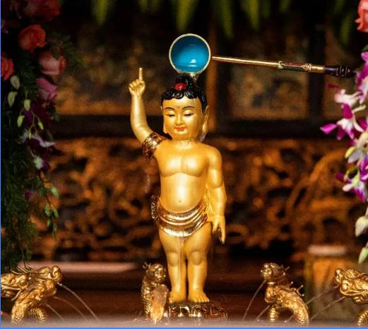

讀《浴佛功德經》念世尊之慈教

每逢農曆四月初八佛誕日，各道場均會舉行浴佛儀式，紀念九龍吐溫冷二泉沐佛的殊勝。「我今灌沐諸如來，淨智莊嚴功德聚；五濁眾生令離垢，同證如來淨法身。」
念佛慈教 發誠供養
清淨慧菩薩代眾生請問如來清淨果報身因緣，佛示因地廣修六度、慈悲喜捨，果具三十二相。若以至誠供養佛化身，與供養金身功德等無差別。以牛頭栴檀等作香泥香水為吉祥水，設壇安置太子佛，香花瓔珞幡蓋莊嚴。
詠讚佛德 願心清淨
舀香湯自佛頂澆淋，思惟諸佛功德，回向己身無垢、眾生同證、社會安定、世界和平，永保初發心，廣修功德，不退菩提。一瓢香水，一個大願；因地浴佛浴自心，果地淨相淨性覺。